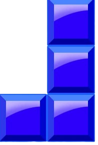
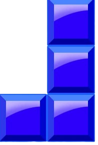
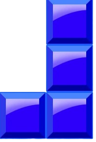

Welcome 
Welcome 


Welcome 
About
Tetris is primarily composed of a field of play in which pieces of different geometric forms, called "tetrominoes",
descend from the top of the field. During this descent, the player can move the pieces laterally and rotate them
until they touch the bottom of the field or land on a piece that had been placed before it. The player can neither
slow down the falling pieces nor stop them, but can accelerate them, in most versions. The objective of the game is to
use the pieces to create as many complete horizontal lines of blocks as possible. When a line is completed, it disappears,
and the blocks placed above fall one rank. Completing lines grants points, and accumulating a certain number of points or
cleared lines moves the player up a level, which increases the number of points granted per completed line
In most versions, the speed of the falling pieces increases with each level, leaving the player with less time to think
about the placement. The player can clear multiple lines at once, which can earn bonus points in some versions.
It is possible to complete up to four lines simultaneously with the use of the I-shaped tetromino; this move is called a "Tetris",
and is the basis of the game's title.
If the player cannot make the blocks disappear quickly enough, the field will start to fill; when the pieces reach the top of
the field and prevent the arrival of additional pieces, the game ends. At the end of each game, the player receives a score
based on the number of lines that have been completed. Theoretically, the game never ends with the player's victory.
The player can complete only as many lines as possible before an inevitable loss.
Since 1996, the Tetris Company has internally defined specifications and guidelines to which publishers must adhere
to be granted a license to Tetris. The contents of these guidelines establish elements such as the correspondence
of buttons and actions, the size of the field of play, and the system of rotation.
|
L Block | J Block | |
Z Block | |
S Block | |
|
O Block | I Block | |
T Block |
History
In 1979, Alexey Pajitnov joined the Computer Center of the Soviet Academy of Sciences as a speech
recognition researcher. While he was tasked with testing the capabilities of new hardware, his ambition
was to use computers to make people happy. Pajitnov developed several puzzle games on the institute's
computer, an Electronika 60, a scarce resource at the time due in part to CoCom. For Pajitnov,
"games allow people to get to know each other better and act as revealers of things you might not normally notice,
such as their way of thinking".
In 1984, while trying to recreate a favorite puzzle game from his childhood featuring pentominoes,
Pajitnov imagined a game consisting of a descent of random pieces that the player would turn to fill rows.
Pajitnov felt that the game would be needlessly complicated with twelve different shape variations, so he scaled
the concept down to tetrominoes, of which there are seven variants. Pajitnov titled the game Tetris, a word created
from a combination of "tetra" (meaning "four") and his favorite sport, "tennis".
Because the Electronika 60 had no graphical interface, Pajitnov modelled the field and pieces using spaces and
brackets (45 lines of 80 ASCII characters). Realizing that completed lines filled the screen quickly,
Pajitnov decided to delete them, creating a key part of Tetris gameplay. This early version of Tetris had no scoring
system and no levels, but its addictive quality distinguished it from the other puzzle games Pajitnov had created.
Pajitnov wrote the game using Pascal for the RT-11 operating system on the Electronika 60.
Pajitnov had completed the first playable version of Tetris c. 1985. Pajitnov presented Tetris to his colleagues,
who quickly became addicted to it. It permeated the offices within the Academy of Sciences, and within a few weeks
it reached every Moscow institute with a computer. A friend of Pajitnov, Vladimir Pokhilko, who requested the game
for the Moscow Medical Institute, saw people stop working to play Tetris. Pokhilko eventually banned the game from
the Medical Institute to restore productivity.
Pajitnov sought to adapt Tetris to the IBM Personal Computer, which had a higher quality display than the Electronika 60.
Pajitnov recruited Vadim Gerasimov, a 16-year-old high school student who was known for his computer skills.
Pajitnov had met Gerasimov before through a mutual acquaintance, and they had worked together on previous games.
Gerasimov adapted Tetris to the IBM PC over the course of a few weeks, incorporating color and a scoreboard.
The PC port was written with Turbo Pascal.
Tetris
| Jstris |
A simple online multiplayer block game. Jstris is known for its fast gameplay and is attracting talented players from all around the world. This guide will introduce you to the basic features of the game. Jstris is a simple online multiplayer block game built in Javascript, HTML5 and Python (server). Play Jstris |
| TETR.IO |
TETR.IO is a free-to-play online multiplayer and single player game developed by osk. Players can play against friends and foes all over the world and claim a spot on the leaderboards, found in the TETRA CHANNEL. It is referred to as a free-to-win, modern yet familiar online stacker game in the same genre as Tetris. Play TETR.IO |
| TETRIS® EFFECT: CONNECTED |
Tetris® Effect: Connected is Tetris like you've never seen it, or heard it, or felt it before—an incredibly addictive, unique, and breathtakingly gorgeous reinvention of one of the most popular puzzle games of all time, from the people who brought you the award-winning Rez Infinite and legendary puzzle game Lumines. Play TETRIS® EFFECT: CONNECTED |
| Puyo Puyo™ Tetris® |
Puyo Puyo Tetris (ぷよぷよテトリス, Puyopuyo Tetorisu) is a 2014 puzzle video game developed by Sonic Team and published by Sega. The game is a crossover between the Puyo Puyo series and the Tetris franchise, and features various gameplay modes incorporating both aspects. The game includes characters modeled and named after seven Tetrominos, which are different puzzle pieces each made of four blocks. Play Puyo Puyo™ Tetris® |